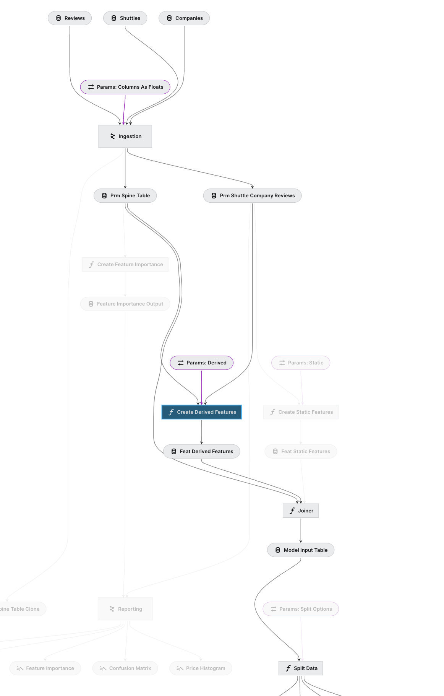

from kedro.pipeline import pipeline, node
from kedro.pipeline.node import Node
def foo():
return "bar"Kedro Node and Pipelines
Kedro introduces the concepts of Nodes and Pipelines. A basic understanding of these concepts is assumed. However, if you’re unfamiliar, you can refer to the Nodes and Pipelines documentation for more details.
In essence, a Kedro Node acts as a thin wrapper around a Python function, specifying its inputs and outputs. On the other hand, a Pipeline is essentially a collection of Nodes that are strung together. When a pipeline is executed, Kedro resolves the dependencies between nodes to determine the correct order of execution.
While Kedro is primarily designed for data and machine learning applications, it can be utilized for executing any sequential tasks, including parallel processing if needed.
node_a = node(func=foo, inputs=None, outputs="output_a")
first_pipeline = pipeline([])
node_a, first_pipeline(Node(foo, None, 'output_a', None), Pipeline([]))pipeline is a factory method that expects a list of Node and produce the Pipeline object. In this example, we have an empty Pipeline. Below is another valid example:
pipeline([node_a])Pipeline([
Node(foo, None, 'output_a', None)
])Node Uniqueness
The pipeline in Kedro automatically validates Node instances. Specifically, nodes cannot produce the same output (though they can share the same input), and there cannot be duplicate nodes within the pipeline. This validation is crucial to ensure that the pipeline forms an executable Directed Acyclic Graph (DAG), allowing for proper execution and preventing any cyclic dependencies.
pipeline([node_a, node_a])ValueError: Pipeline nodes must have unique names. The following node names appear more than once:
Free nodes:
- foo(None) -> [output_a]
You can name your nodes using the last argument of 'node()'.On the other hand, Node are considered equal if they have the same inputs, outputsand function (and node name if provided, it is an optional argument)
node_b = node(foo, inputs=None, outputs="output_a")node_b == node_aTrueInternally, it is comparing the name attribute, which is a combination of namespace, function name, inputs and outputs. This is not important to most Kedro users and are only used by Kedro internally.
node_a.name
'foo(None) -> [output_a]'Node.__str__??Signature: Node.__str__(self)
Docstring: Return str(self).
Source:
def __str__(self):
def _set_to_str(xset):
return f"[{','.join(xset)}]"
out_str = _set_to_str(self.outputs) if self._outputs else "None"
in_str = _set_to_str(self.inputs) if self._inputs else "None"
prefix = self._name + ": " if self._name else ""
return prefix + f"{self._func_name}({in_str}) -> {out_str}"
File: ~/miniconda3/envs/blog/lib/python3.10/site-packages/kedro/pipeline/node.py
Type: functionPipeline Arithmetic
The closest analogy to Pipeline is the Python set. They share simliary characteristics: - The elements cannot be repeated. - Pipelines can be added or subtracted
pipeline([node_a]) + pipeline([node_a])Pipeline([
Node(foo, None, 'output_a', None)
])a = node(foo, None, "a")
b = node(foo, None, "b")
c = node(foo, None, "c")
d = node(foo, None, "d")
original_set = set(["a","b","c"])
original_pipeline = pipeline([a,b,c])pipeline([a]) + pipeline([b])Pipeline([
Node(foo, None, 'a', None),
Node(foo, None, 'b', None)
])pipeline([a, b]) - pipeline([b])Pipeline([
Node(foo, None, 'a', None)
])pipeline([a, b]) - pipeline([a])Pipeline([
Node(foo, None, 'b', None)
])original_set| set(["b","c","d"]){'a', 'b', 'c', 'd'}pipeline([a,b,c])| pipeline([b,c,d]) # nodes in both pipelinesPipeline([
Node(foo, None, 'a', None),
Node(foo, None, 'b', None),
Node(foo, None, 'c', None),
Node(foo, None, 'd', None)
])original_set & set(["b","c","d"]){'b', 'c'}pipeline([a,b,c]) & pipeline([b,c,d]) # only nodes that exist in both pipelinesPipeline([
Node(foo, None, 'b', None),
Node(foo, None, 'c', None)
])Pipeline arithmetic is more useful for pipeline registration i.e. pipeline_registry.py. For example, you can combine your development pipeline and inference pipeline in different way.
def fake_node(name):
return node(foo, inputs=None, outputs=name, name=name)
# For simplicaition, let's assume each pipeline is just one single node.
spark_pipeline = pipeline([fake_node("spark")])
feature_engineering = pipeline([fake_node("feature_engineering")])
model_training = pipeline([fake_node("model_pipeline")])
inference = pipeline([fake_node("inference")])With 4 base pipelines, you can combined them in different ways. For example you want a e2e pipeline which add all of them.
e2e = spark_pipeline + feature_engineering + model_training + inferenceYou can also have a local pipeline that skip only the spark pipeline.
local = e2e - spark_pipeline
localPipeline([
Node(foo, None, 'feature_engineering', 'feature_engineering'),
Node(foo, None, 'inference', 'inference'),
Node(foo, None, 'model_pipeline', 'model_pipeline')
])Advance Pipeline Slicing
Kedro provides an interaction visualisation that you can play around with, for this post I am gonna stick with the demo project and explains concepts about Pipeline and how you can slice pipeline and compose them.
#hide
%load_ext kedro.ipython
%cd /Users/Nok_Lam_Chan/dev/kedro-viz/demo-project%reload_kedro /Users/Nok_Lam_Chan/dev/kedro-viz/demo-projectINFO Kedro project modular-spaceflights __init__.py:134
INFO Defined global variable 'context', 'session', 'catalog' and __init__.py:135 'pipelines'
By using the reload_kedro inside a notebook, you can access the project pipelines object. Let’s say I want to filter out the highlighted pipeline like this (click on the “Create Derived Features”): 
To filter this with the Pipeline API, you need two options. from-nodes(downstream) and to-nodes (upstream).
pipelines.keys()dict_keys(['__default__', 'Data ingestion', 'Modelling stage', 'Feature engineering', 'Reporting stage', 'Pre-modelling'])
full_pipelinePipeline([ Node(apply_types_to_companies, 'companies', 'ingestion.int_typed_companies', 'apply_types_to_companies'), Node(apply_types_to_reviews, ['reviews', 'params:ingestion.typing.reviews.columns_as_floats'], 'ingestion.int_typed_reviews', 'apply_types_to_reviews'), Node(apply_types_to_shuttles, 'shuttles', 'ingestion.int_typed_shuttles@pandas1', 'apply_types_to_shuttles'), Node(aggregate_company_data, 'ingestion.int_typed_companies', 'ingestion.prm_agg_companies', 'company_agg'), Node(combine_shuttle_level_information, {'shuttles': 'ingestion.int_typed_shuttles@pandas2', 'reviews': 'ingestion.int_typed_reviews', 'companies': 'ingestion.prm_agg_companies'}, ['prm_shuttle_company_reviews', 'prm_spine_table'], 'combine_step'), Node(create_derived_features, ['prm_spine_table', 'prm_shuttle_company_reviews', 'params:feature_engineering.feature.derived'], 'feature_engineering.feat_derived_features', 'create_derived_features'), Node(create_feature_importance, 'prm_spine_table', 'feature_importance_output', None), Node(create_static_features, ['prm_shuttle_company_reviews', 'params:feature_engineering.feature.static'], 'feature_engineering.feat_static_features', None), Node(<lambda>, 'prm_spine_table', 'ingestion.prm_spine_table_clone', None), Node(create_matplotlib_chart, 'prm_shuttle_company_reviews', 'reporting.confusion_matrix', None), ... ])
node_name = "feature_engineering.create_derived_features" # make s|apipeline
full_pipeline.filter(from_nodes=[node_name], to_nodes=[node_name])Pipeline([ Node(create_derived_features, ['prm_spine_table', 'prm_shuttle_company_reviews', 'params:feature_engineering.feature.derived'], 'feature_engineering.feat_derived_features', 'create_derived_features') ])
This only select one node because by default the filter method apply both method as an and condition. So we need to apply the filter method separately.
full_pipeline.filter(from_nodes=[node_name]) | full_pipeline.filter(to_nodes=[node_name])Pipeline([ Node(apply_types_to_companies, 'companies', 'ingestion.int_typed_companies', 'apply_types_to_companies'), Node(apply_types_to_reviews, ['reviews', 'params:ingestion.typing.reviews.columns_as_floats'], 'ingestion.int_typed_reviews', 'apply_types_to_reviews'), Node(apply_types_to_shuttles, 'shuttles', 'ingestion.int_typed_shuttles@pandas1', 'apply_types_to_shuttles'), Node(aggregate_company_data, 'ingestion.int_typed_companies', 'ingestion.prm_agg_companies', 'company_agg'), Node(combine_shuttle_level_information, {'shuttles': 'ingestion.int_typed_shuttles@pandas2', 'reviews': 'ingestion.int_typed_reviews', 'companies': 'ingestion.prm_agg_companies'}, ['prm_shuttle_company_reviews', 'prm_spine_table'], 'combine_step'), Node(create_derived_features, ['prm_spine_table', 'prm_shuttle_company_reviews', 'params:feature_engineering.feature.derived'], 'feature_engineering.feat_derived_features', 'create_derived_features'), Node(joiner, ['prm_spine_table', 'feature_engineering.feat_static_features', 'feature_engineering.feat_derived_features'], 'model_input_table', None), Node(split_data, ['model_input_table', 'params:split_options'], ['X_train', 'X_test', 'y_train', 'y_test'], None), Node(train_model, ['X_train', 'y_train', 'params:train_evaluation.model_options.linear_regression'], ['train_evaluation.linear_regression.regressor', 'train_evaluation.linear_regression.experiment_params'], None), Node(train_model, ['X_train', 'y_train', 'params:train_evaluation.model_options.random_forest'], ['train_evaluation.random_forest.regressor', 'train_evaluation.random_forest.experiment_params'], None), ... ])
Now we get the correct filtered pipeline as expected.
More notes
The Pipeline.filter support or operator
While the current filter supports many options, there may be some value to wrap around the Pipeline API to support things like or. This is only possible if you use the Python API directly but not CLI (with the example above). maybe something similar to the Graph Operators in dbt.
e.g.
kedro run --select "my_model+" # select my_model and all children
kedro run --select "+my_model" # select my_model and all parents
kedro run --select "+my_model+" # select my_model, and all of its parents and childrenSelecting or slicing multiple pipeline with kedro run
Since Pipeline API support arithmetic, it would be quite straight forward to support things like kedro run --pipeline a+b or kedro run --pipeline a-b. Let’s have a look what’s options are available for the CLI.
!kedro run --helpUsage: kedro run [OPTIONS]
Run the pipeline.
Options:
--from-inputs TEXT A list of dataset names which should be used as a
starting point.
--to-outputs TEXT A list of dataset names which should be used as
an end point.
--from-nodes TEXT A list of node names which should be used as a
starting point.
--to-nodes TEXT A list of node names which should be used as an
end point.
-n, --nodes TEXT Run only nodes with specified names.
-r, --runner TEXT Specify a runner that you want to run the
pipeline with. Available runners:
'SequentialRunner', 'ParallelRunner' and
'ThreadRunner'.
--async Load and save node inputs and outputs
asynchronously with threads. If not specified,
load and save datasets synchronously.
-e, --env TEXT Kedro configuration environment name. Defaults to
`local`.
-t, --tags TEXT Construct the pipeline using only nodes which
have this tag attached. Option can be used
multiple times, what results in a pipeline
constructed from nodes having any of those tags.
-lv, --load-versions TEXT Specify a particular dataset version (timestamp)
for loading.
-p, --pipeline TEXT Name of the registered pipeline to run. If not
set, the '__default__' pipeline is run.
-ns, --namespace TEXT Name of the node namespace to run.
-c, --config FILE Specify a YAML configuration file to load the run
command arguments from. If command line arguments
are provided, they will override the loaded ones.
--conf-source PATH Path of a directory where project configuration
is stored.
--params TEXT Specify extra parameters that you want to pass to
the context initialiser. Items must be separated
by comma, keys - by colon or equals sign,
example: param1=value1,param2=value2. Each
parameter is split by the first comma, so
parameter values are allowed to contain colons,
parameter keys are not. To pass a nested
dictionary as parameter, separate keys by '.',
example: param_group.param1:value1.
-h, --help Show this message and exit.This is what happen when you do kedro run -p training -t model_a, it’s a two steps flitering: 1. Apply the -p pipeline name to select a key from the pipeline dictionary, it’s just pipelines[pipeline_name], note this mean you can only select ONE pipeline at a time. 2. The pipeline is then further filtered with Pipeline.filter
from kedro.pipeline.pipeline import Pipeline
Pipeline.filter??Signature:
Pipeline.filter(
self,
tags: 'Iterable[str] | None' = None,
from_nodes: 'Iterable[str] | None' = None,
to_nodes: 'Iterable[str] | None' = None,
node_names: 'Iterable[str] | None' = None,
from_inputs: 'Iterable[str] | None' = None,
to_outputs: 'Iterable[str] | None' = None,
node_namespace: 'str | None' = None,
) -> 'Pipeline'
Source:
def filter( # noqa: PLR0913
self,
tags: Iterable[str] | None = None,
from_nodes: Iterable[str] | None = None,
to_nodes: Iterable[str] | None = None,
node_names: Iterable[str] | None = None,
from_inputs: Iterable[str] | None = None,
to_outputs: Iterable[str] | None = None,
node_namespace: str | None = None,
) -> Pipeline:
"""Creates a new ``Pipeline`` object with the nodes that meet all of the
specified filtering conditions.
The new pipeline object is the intersection of pipelines that meet each
filtering condition. This is distinct from chaining multiple filters together.
Args:
tags: A list of node tags which should be used to lookup
the nodes of the new ``Pipeline``.
from_nodes: A list of node names which should be used as a
starting point of the new ``Pipeline``.
to_nodes: A list of node names which should be used as an
end point of the new ``Pipeline``.
node_names: A list of node names which should be selected for the
new ``Pipeline``.
from_inputs: A list of inputs which should be used as a starting point
of the new ``Pipeline``
to_outputs: A list of outputs which should be the final outputs of
the new ``Pipeline``.
node_namespace: One node namespace which should be used to select
nodes in the new ``Pipeline``.
Returns:
A new ``Pipeline`` object with nodes that meet all of the specified
filtering conditions.
Raises:
ValueError: The filtered ``Pipeline`` has no nodes.
Example:
::
>>> pipeline = Pipeline(
>>> [
>>> node(func, "A", "B", name="node1"),
>>> node(func, "B", "C", name="node2"),
>>> node(func, "C", "D", name="node3"),
>>> ]
>>> )
>>> pipeline.filter(node_names=["node1", "node3"], from_inputs=["A"])
>>> # Gives a new pipeline object containing node1 and node3.
"""
# Use [node_namespace] so only_nodes_with_namespace can follow the same
# *filter_args pattern as the other filtering methods, which all take iterables.
node_namespace_iterable = [node_namespace] if node_namespace else None
filter_methods = {
self.only_nodes_with_tags: tags,
self.from_nodes: from_nodes,
self.to_nodes: to_nodes,
self.only_nodes: node_names,
self.from_inputs: from_inputs,
self.to_outputs: to_outputs,
self.only_nodes_with_namespace: node_namespace_iterable,
}
subset_pipelines = {
filter_method(*filter_args) # type: ignore
for filter_method, filter_args in filter_methods.items()
if filter_args
}
# Intersect all the pipelines subsets. We apply each filter to the original
# pipeline object (self) rather than incrementally chaining filter methods
# together. Hence the order of filtering does not affect the outcome, and the
# resultant pipeline is unambiguously defined.
# If this were not the case then, for example,
# pipeline.filter(node_names=["node1", "node3"], from_inputs=["A"])
# would give different outcomes depending on the order of filter methods:
# only_nodes and then from_inputs would give node1, while only_nodes and then
# from_inputs would give node1 and node3.
filtered_pipeline = Pipeline(self.nodes)
for subset_pipeline in subset_pipelines:
filtered_pipeline &= subset_pipeline
if not filtered_pipeline.nodes:
raise ValueError(
"Pipeline contains no nodes after applying all provided filters"
)
return filtered_pipeline
File: ~/dev/kedro/kedro/pipeline/pipeline.py
Type: functionThis means that, if you have tags applied across multiple pipeline, you cannot filter it by tag, unless you apply the filter in the largest pipeline that contains all nodes. What if we can support things like: kedro run -p feature+training -t model_a?